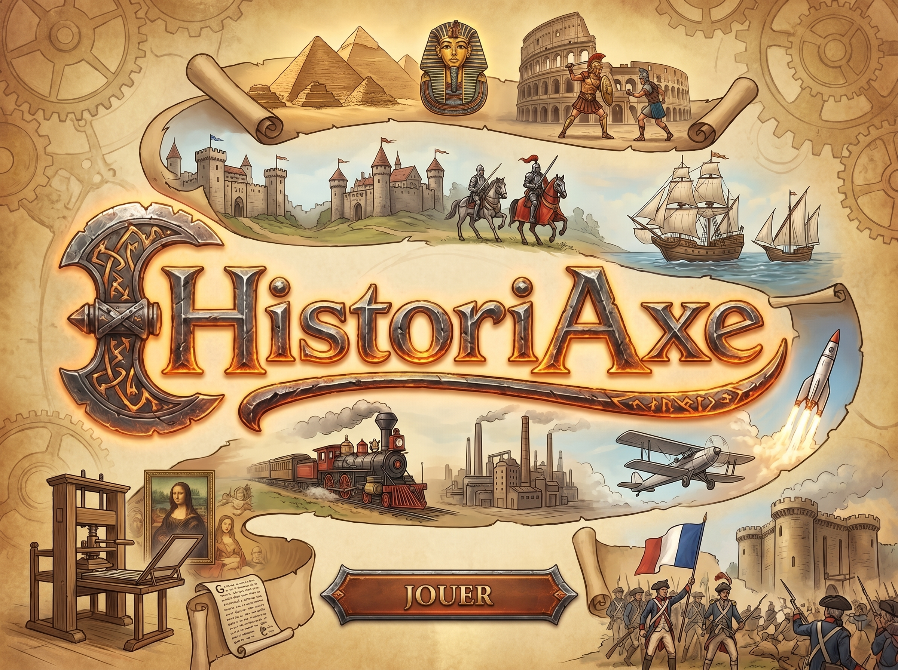

Consultez la frise complète chronologiquement pour apprendre, sans jouer.
Aucune vie perdue. Jouez à votre rythme pour tout mémoriser.
3 vies. Le mode de jeu standard et équilibré.
3 vies. Placez les événements le plus vite possible.
1 vie, chronométré. La moindre erreur est fatale.
Voulez-vous vraiment quitter cette partie ?
« Auto » suit la rotation de l'appareil : portrait affiche la frise verticale, paysage l'affiche horizontale.
« Auto » suit le réglage clair/sombre programmé sur votre appareil.